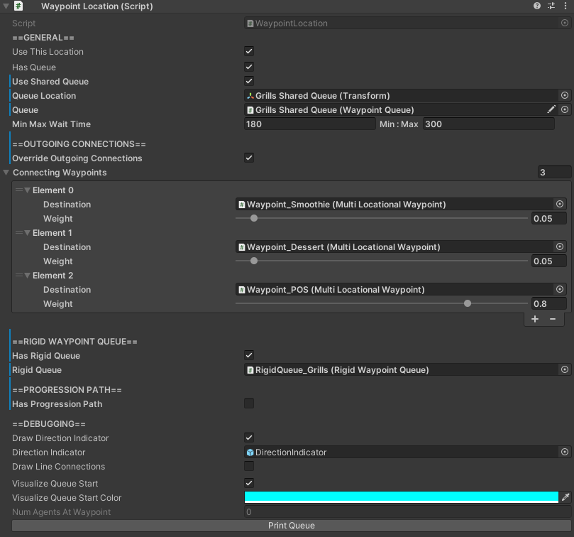

WaypointLocations

How to Locate
The WaypointLocation component is located on any GameObject with a name containing "Waypoint", all of which can be found in the hierarchy.
They are typically children of GameObjects that serve as Waypoints.
Settings
| Setting | Description |
|---|---|
| Use This Location |
Toggles whether or not the position of the GameObject this WaypointLocation is attached to represents the position agents will pathfind to. |
| Location | Only applicable if Use This Location is false.Reference to position that agents will pathfind to. |
| Has Queue | Toggles whether or not this location has a queue. Note: If this is false, agents will not be able to form a queue to wait for this location if another agent is currently waiting at it. This is ideal for things like seating, which don't typically have queues. |
| Use Shared Queue |
Only applicable if Has Queue is true.Toggles whether or not this location shares the same queue as another location. |
| Queue Location | Only applicable if Has Queue is true.Reference to the position of the queue for this location. Typically, this is a child of the GameObject this WaypointLocation is attached to, with the name "Queue Start Location". |
| Queue | Only applicable if Has Queue and Use Shared Queue are true.Reference to the shared queue this location uses. |
| Min Max Wait Time |
Min and max wait time in seconds that an agent will wait at this location after arriving. Wait time is randomly selected each time an agent arrives. |
| Override Outgoing Connections |
Toggles whether or not this location should override the waypoint connections that are defined by the Waypoint this location is a sublocation of. |
| Connecting Waypoints |
Only applicable if Override Outgoing Connections is true.All possible weighted waypoints an agent can visit after this specific location. Note: These can be override the default connections defined by the Waypoint this location is a sublocation of. |
| Has Rigid Queue |
Only applicable if Has Queue is true.Toggles whether or not this location has a RigidWaypointQueue. |
| Rigid Queue | Only applicable if Has Queue and Has Rigid Queue are true.Reference to this location's RigidWaypointQueue. |
| Has Progression Path |
Toggles whether or not this location has a ProgressionPath.ProgressionPaths must be a component on the same GameObject as this WaypointLocation. |
| Draw Direction Indicator |
Toggles whether or not the visual that shows the direction this location faces should appear. |
| Direction Indicator |
ADVANCED USER SETTING. Reference to direction indicator prefab. |
| Draw Line Connections |
Toggles whether or not connections between each member in this location's queue should be visualized. The color of the line connection will interpolate between Line Color Start and Line Color End as it draws between each agent in the queue. |
| Line Color Start |
Only applicable if Draw Line Connections is true.Starting color of the line connection visual. |
| Line Color End |
Only applicable if Draw Line Connections is true.Ending color of the line connection visual. |
| Visualize Queue Start |
Toggles whether or not the start of this location's queue should be visualized. |
| Visualize Queue Start Color |
Only applicable if Visualize Queue Start is true.Color of the queue start visual. |
| Num Agents At Waypoint |
Uneditable field. Used for debugging how many agents are currently waiting at this location. |
| Print Queue Button |
Button that prints the names of all agents currently in this location's queue to the console. |
Tips
Queue Locationshould always be positioned a bit back from theLocationof theWaypointLocation. This is to ensure agents waiting at theLocationare not too close to agents waiting at the front of the queue.- If
Has Progression Pathistrue, aProgressionPathcomponent must also be added to the same GameObject as the relatedWaypointLocation. TheProgressionPathcomponent also requires aLerpableLinecomponent to work correctly.